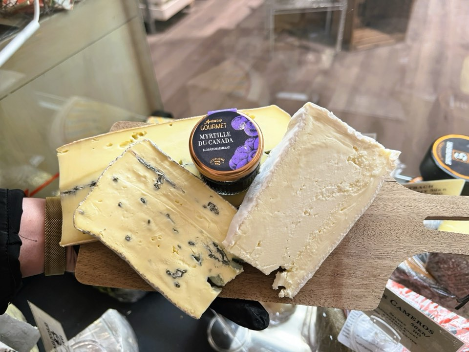
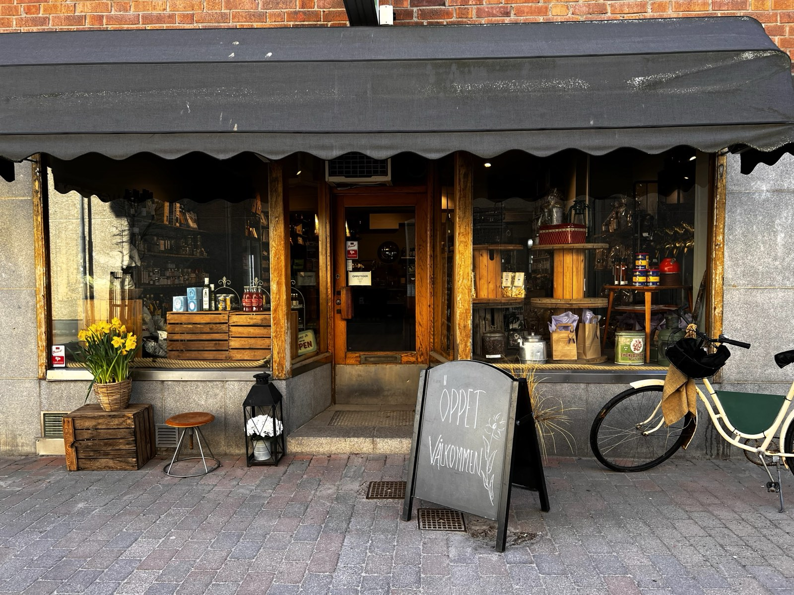
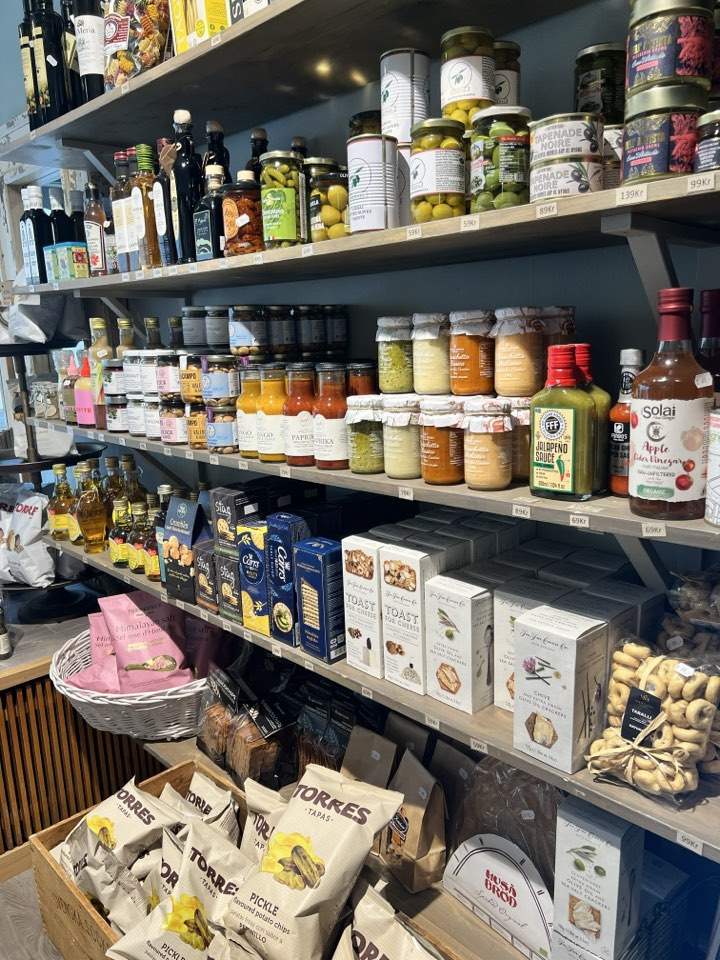
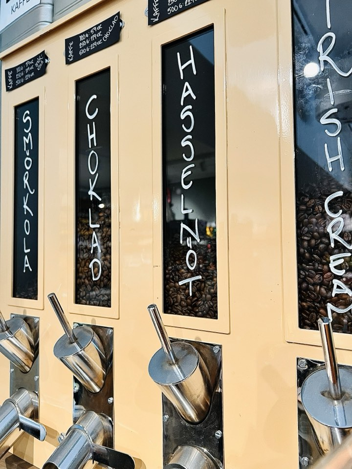
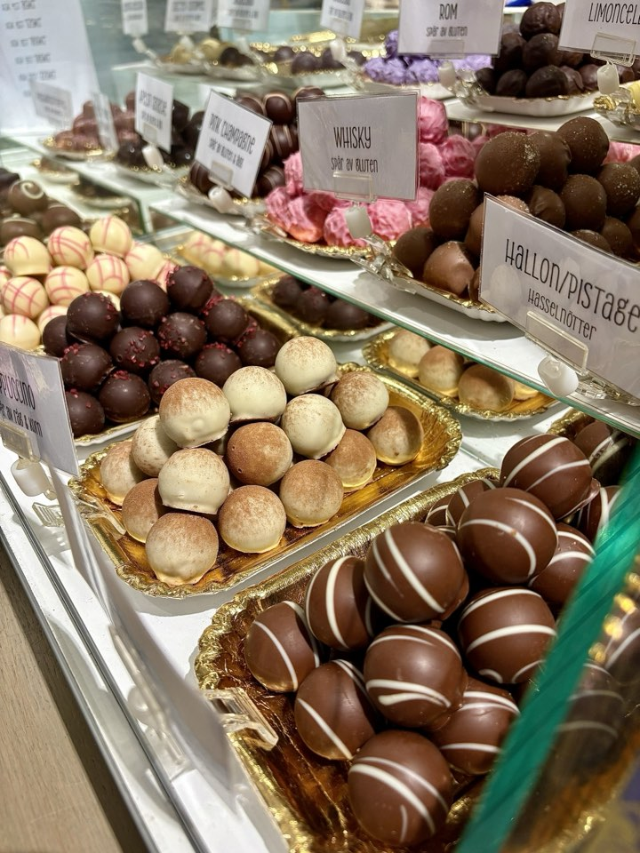

I
Ostar & delikatesser
Krämiga, lagrade, milda och kraftfulla ostar, tillsammans med tryffelsalami, oliver och godsaker från Italien, Spanien och Nederländerna. Mer ost till folket, helt enkelt!

Delikatessbutik mitt i Nyköping
Doften av kaffe, en pralindisk full av frestelser och ostar värda en omväg.
Välkommen in på Bagaregatan, här får du alltid ett gott råd på köpet.
Bagaregatan 31C · 611 30 Nyköping

Om butiken
Te och kaffe i lösvikt, praliner, ostar och delikatesser från hela Europa, utvalda med omsorg. Men det som gör Bönornas speciellt är mötet. Här tar vi oss alltid tid för dig.
Läs mer om ossSortiment
Från doftande teer till krämiga ostar. Här är tre av våra största kärlekar.

I
Krämiga, lagrade, milda och kraftfulla ostar, tillsammans med tryffelsalami, oliver och godsaker från Italien, Spanien och Nederländerna. Mer ost till folket, helt enkelt!

II
Doftande teer och smaksatta kaffebönor, från klassiska favoriter till spännande nyheter. Varje kopp blir en liten stund bara för dig.

III
Praliner i över 20 smaker och lakrits för alla smaklökar, från söt till riktigt salt. För vad vore livet utan choklad?
Varje kopp är en resa för dina sinnen.

Presentkorgar
Färdiga presenter i olika prisklasser, eller en korg som sätts ihop helt efter mottagarens smak.